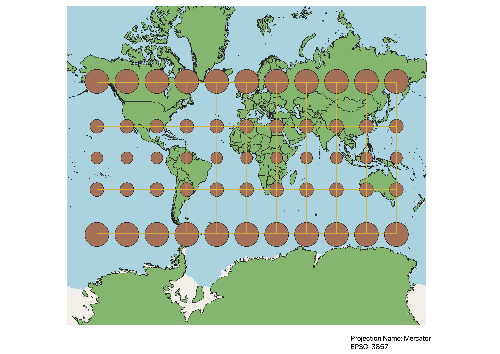
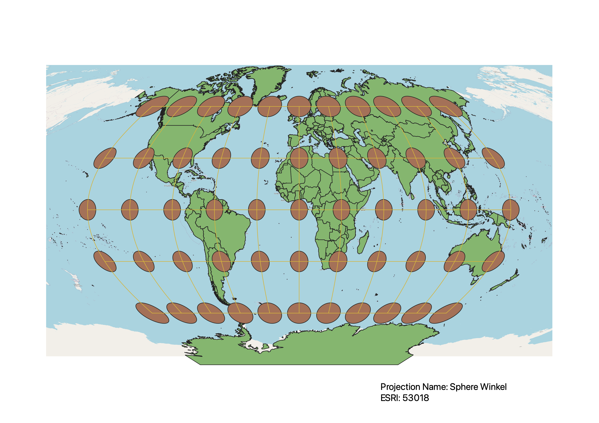
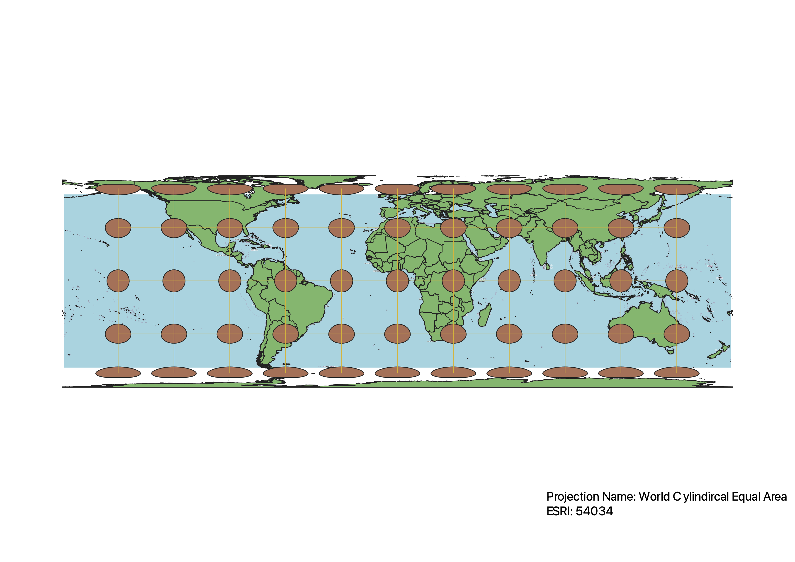
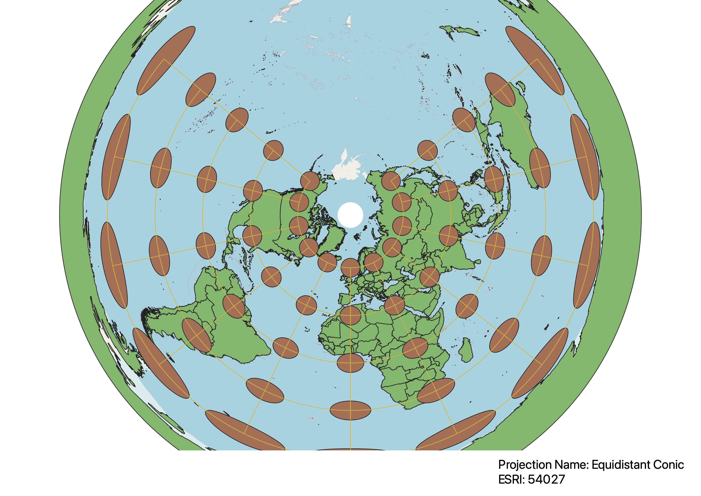
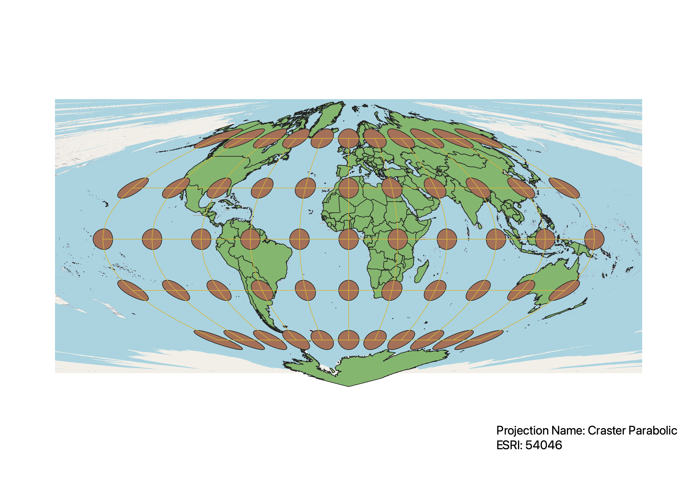
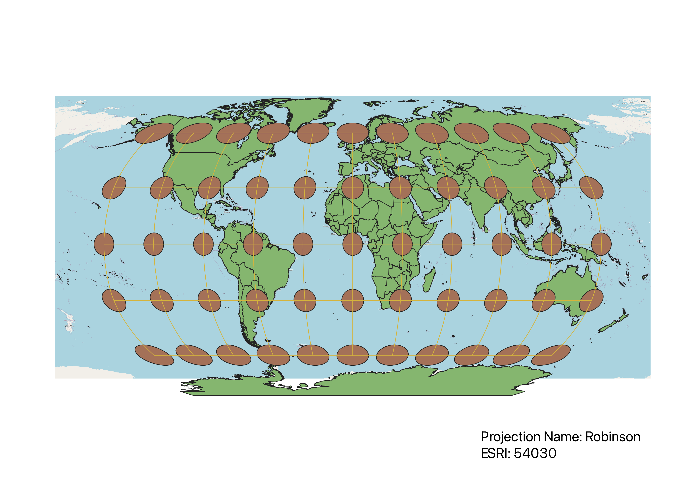

In this project I learned how to display images in different projections
Describe in your own words how you displayed the map in different projections using QGIS
I started by installing the Indicatrix mapper plugin in QGIS so that I could display Tissot's Indicatrix cirlces and demonstrate the distortions of the various projections. Then, I selected various projections by searching by ESPG and making print layouts of each.
WGS84 Projection
This projection seems to preserve direction, and mostly preserves shape, however it does not preserve size, with polar exremities being enlarged and compressed vertically

Aitoff Projection
This projection results in a non-rectangular map, so while it does not preserve direction, it does a better job than cylindrical projections of preserving area/size.

Now, you should add the following projections on your own:
EPSG: 3857, 53018, 54034, 54027, 102016, and two additional projections that you choose.
Mercator Projection
The Mercator map projection is a cylindrical map. It preserves angles and directions, making it useful for navigation, but distorts the size of objects, making countries near the poles appear larger and near the equator smaller.

Sphere Winkel Projection
This projection does a decent job of preserving both size and shape, however it does not preserve angles/direction, becoming more distorted the further away from the center of the map.

Cylindrical Equal Area Projection
This job preserves area, distance, and direction, however shape is not preserved, becoming more distorted the further from the equator

Equidistant Conic Projection
This projection preserves distance and direction, however only preserves them in the North/South Axis, and it overestimates area the further from the North Pole.

North Pole Azimuthal Equidistant Projection
This porjection is very similar to the previous one. It preserves distance and direction on only the North/South Axis, and increases the size of areas in the Southern Hemisphere.

Craster Parabolic Projection
This projection preserves distance along the North/South Axis and direction along the East/West Axis. It preserves shape and size realtively well except at the extremities of the map.

Robinson Projection
This map is a good overall map. It does not entirely preserve any of the four components of distance, direction, shape or area, but it strikes a balance between all four.

Data used for this project
Download Natrual Earth 1:10m Cultural Vector